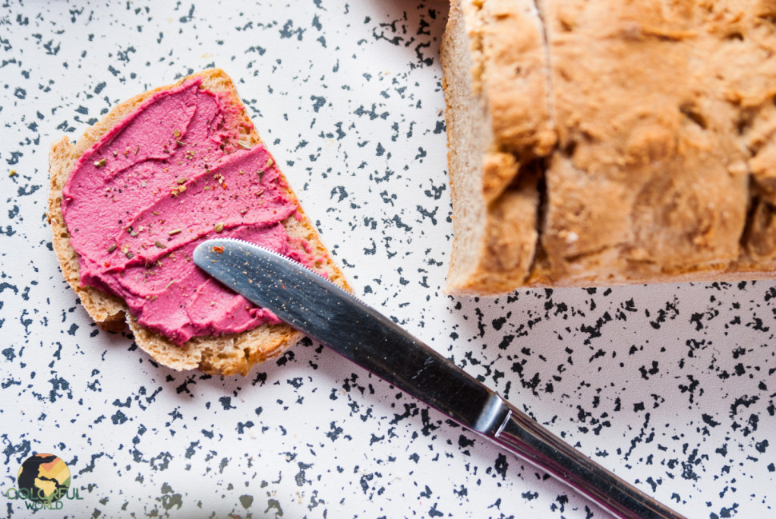

Kartoffel-Dinkelvollkornbrot

Beschreibung:
Einfaches, geschmackvolles Brot aus Dinkelvollkornmehl und Kartoffeln. Dadurch ist es saftig und schmeckt gut!
Zutaten:
- 250g Kartoffeln, gekocht
- 500g Dinkelvollkornmehl
- ca. 15-20g Salz
- 1 Pkg. Trockenhefe
- Wasser
Zubereitung:
- Kartoffeln mit Schale kochen und dann durch Kartoffelpresse drücken.
- Mehl, Salz und Trockenhefe in einer Schüssel abwiegen und zu den Kartoffeln geben.
- Optional können jetzt Brotgewürze hinzugefügt werden.
- Anschließend den Teig verkneten und bei Bedarf etwas Wasser hinzufügen, sodass der Teig nicht zu trocken ist.
- Teig in eine bemehlte Kastenform geben und bei 170°C Umluft für ungefähr eine Stunde backen. Zwischendurch immer wieder mit einem Stäbchen testen - wenn kein Teig mehr hängen bleibt, ist das Brot fertig!
Zurück zur Rezept-Übersicht